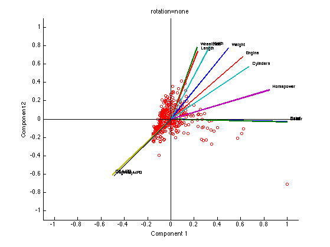

Demo of factor analysis in 2d
Based on http://www.mathworks.com/products/demos/statistics/factorandemo.html PMTKneedsStatsToolbox factoran datasets in stats toolbox are listed here http://www.mathworks.com/access/helpdesk/help/toolbox/stats/bq9uxn4.html
% This file is from pmtk3.googlecode.com requireStatsToolbox dataset = 'cars04'; switch dataset case 'examgrades' loadData('examGrades'); % 120x5 X = grades; varlabels = {'lit1', 'lit2', 'math1', 'math2', 'general'}; case 'car' %load carsmall % 100 rows, several features loadData('carBig'); % 406 rows, several features %X = [Acceleration Displacement Horsepower MPG Weight]; X = [Acceleration Cylinders Displacement Horsepower MPG Weight]; ndx = all(~isnan(X),2); X = X(ndx,:); names = num2cell(Model(ndx,:),2); varlabels = {'Acc', 'Cyl', 'Displ', 'Hp', 'MPG', 'Weight'}; case 'cars04' %http://www.amstat.org/publications/jse/datasets/04cars.txt %http://www.stat.cmu.edu/~cshalizi/350/lectures/10/cars-fixed04.dat loadData('04cars'); % X is 387*18 X = X(:, 8:18); % use cts features, not binary varlabels = varlabels(8:18); end Ks = [2 3]; Ks = [2]; for ki=1:length(Ks) K = Ks(ki); rotations = {'none', 'varimax'}; rotations = {'none'}; for i=1:length(rotations) %X = zscore(X); [W, Psi, R, stats, Z] = factoran(X, K, 'rotate', rotations{i}); f1=figure; biplotPmtk(W, 'varLabels', varlabels, 'Scores',Z); title(sprintf('rotation=%s', rotations{i})) printPmtkFigure(sprintf('faBiplot-%s-%s-K%d', dataset, rotations{i}, K)) if 0 % Click on some points and plot their names %figure(f1); figure; biplotPmtk(W, 'Scores',Z); hold on ZZ=Z; while 1 Xsel = ginput(1); dst = sqdist(Xsel', ZZ(:,1:2)'); [junk, closest] = min(dst,[],2); c = closest; h=text(ZZ(c,1), ZZ(c,2), names{c}); set(h, 'color', 'b'); end end end end